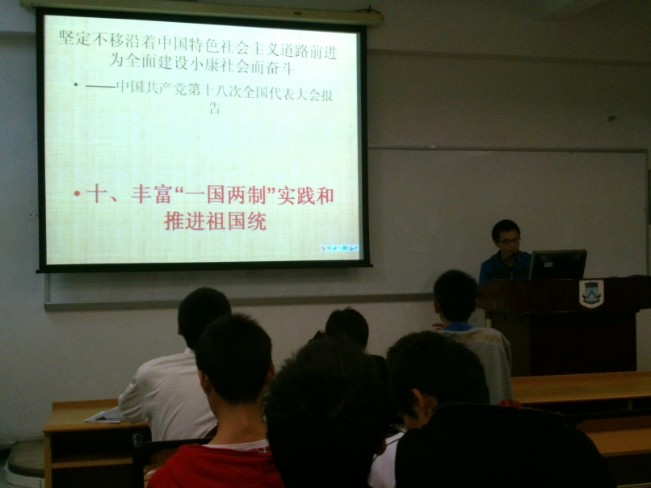

|  | “弘扬社会主旋律， |
2012年12月7日晚上，计算机学院12本6支部在一课南203举行了学习十八大报告的汇报会，本次汇报会面向该支部的全体同学。 在汇报会开始前一个多星期，12本6支部便召开了支部大会，通过将十八大报告分部分、将全体同学分组的方式让同学们选择报告中的两个部分进行深入的学习；在支部会议上，团干对本次活动进行了充分的宣传及动员，所以同学们都热情高涨、积极利用一个星期的时间去学习，去制作视频和ppt等。 |
|
公共管理学院举行学习宣传贯彻党的十八大精神系列活动启动仪式暨党支部书记学习讨论会 12 月21日，公共管理学院党委在举行了学院学习贯彻党的十八大精神系列活动启动仪式暨党支部书记学习讨论会。学院党委书记郑仲、副书记陈培新出动，学院教工和学生各党支部书记参加了会议。会议由郑仲主持。 |
|